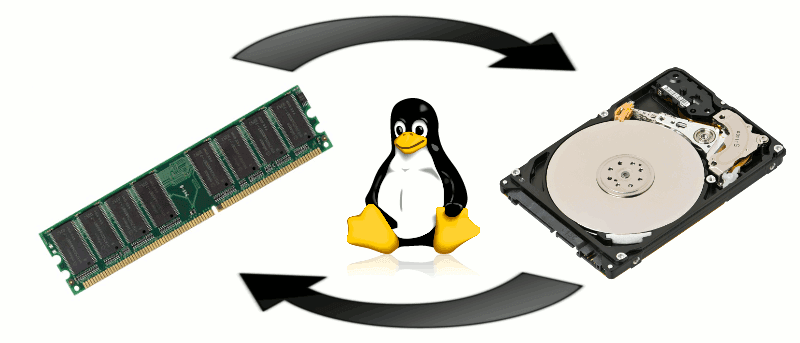
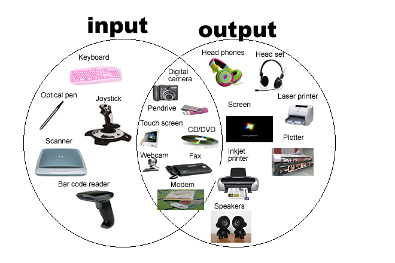

Núcleo
El núcleo es el corazón del sistema operativo y es responsable de gestionar los recursos del hardware y proporcionar servicios básicos a las aplicaciones y usuarios. Controla el acceso a la CPU, la memoria, los dispositivos de entrada/salida y otros recursos del sistema. Además, el núcleo administra la planificación de procesos, la administración de memoria y el manejo de interrupciones.
Controladores de dispositivos
Estos componentes se ocupan de interactuar con los dispositivos de hardware, como teclados, ratones, pantallas, discos duros, impresoras, etc. Los controladores de dispositivos actúan como intermediarios entre el hardware y el sistema operativo, permitiendo que se realicen operaciones de entrada y salida de datos de manera eficiente.

Gestión de procesos
Este componente se encarga de administrar los procesos en el sistema operativo. Un proceso puede entenderse como una instancia de un programa en ejecución. El administrador de procesos asigna recursos de manera equitativa y asegura que cada proceso tenga acceso a la CPU y a los recursos necesarios. También maneja la creación, finalización y suspensión de procesos, así como la comunicación y sincronización entre ellos.

Gestión de memoria
La memoria es un recurso vital en un sistema operativo. El administrador de memoria se encarga de asignar y liberar memoria para los procesos, manteniendo un seguimiento de qué partes de la memoria están siendo utilizadas y cuáles están libres. También se encarga de la gestión de la memoria virtual, que permite que los programas utilicen más memoria de la disponible físicamente, almacenando partes menos utilizadas en el disco.
Sistema de ficheros
El sistema de ficheros es responsable de organizar y gestionar los archivos en el sistema operativo. Proporciona una estructura jerárquica para el almacenamiento y recuperación de datos en el disco duro u otros medios de almacenamiento. El sistema de archivos se encarga de la creación, eliminación, lectura y escritura de archivos, así como del control de acceso y la seguridad de los mismos.
Dispositivos de entrada y salida

Los dispositivos de entrada son aquellos que permiten al usuario ingresar información o comandos al sistema informático. Algunos ejemplos comunes incluyen:
- Teclado: Permite al usuario ingresar texto, números y comandos mediante la pulsación de teclas.
- Mouse: Permite al usuario controlar el movimiento de un puntero en la pantalla y realizar acciones como hacer clic, hacer doble clic y arrastrar elementos.
- Escáner: Permite digitalizar documentos y convertirlos en archivos digitales.
- Micrófono: Captura el sonido y permite ingresar comandos de voz o realizar grabaciones de audio.
- Cámara web: Captura imágenes o videos y los transmite al sistema informático.
Los dispositivos de salida son aquellos que muestran o transmiten información o resultados desde el sistema informático al usuario. Algunos ejemplos comunes incluyen:
- Pantalla: Muestra información visual, como texto, imágenes, videos y gráficos generados por el sistema.
- Impresora: Produce copias físicas de documentos, imágenes u otros contenidos digitales.
- Altavoces o Auriculares: Reproducen sonido, como música, efectos de sonido o audio en general.
- Proyector: Muestra imágenes o videos en una pantalla más grande, como una pared o una pantalla de proyección.
- Luces indicadoras: Proporcionan información visual mediante el encendido o apagado de luces de diferentes colores para indicar el estado de un dispositivo o sistema.